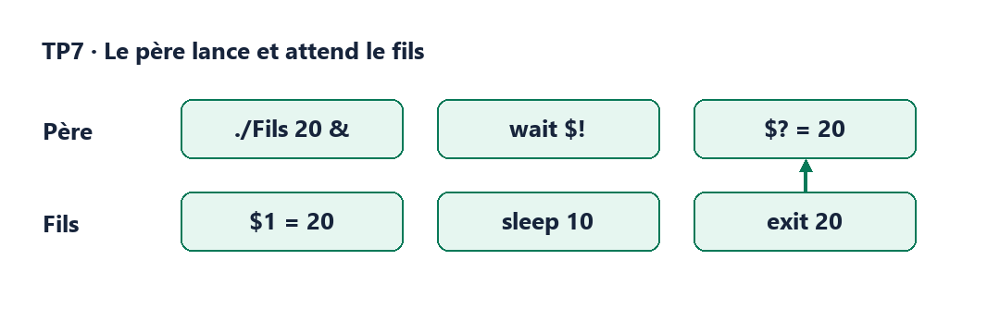

Comprendre le cours
1. Demander une action au système
Le système d’exploitation gère notamment les fichiers, la mémoire, les périphériques et l’exécution des programmes. Le shell interprète les commandes que tu tapes. Quand tu exécutes cd, le shell change son propre répertoire courant. Quand tu exécutes une commande externe, le shell lui transmet des arguments.
Un chemin absolu part de /. Un chemin relatif part du répertoire courant, que donne pwd. . désigne le dossier courant et .. son parent. ~ désigne généralement ton dossier personnel. Quand un nom contient un espace, protège le chemin avec des guillemets. Utilise ls -l pour vérifier le type, les droits et le propriétaire.
2. Vérifier les droits et le masque de création
Les permissions rwx se lisent par groupes de trois pour le propriétaire, son groupe et les autres. Pour un fichier, elles autorisent la lecture, l’écriture et l’exécution. Pour un dossier, elles gouvernent la liste des noms, les changements d’entrées et la traversée. chmod u+x fichier ajoute l’exécution pour le propriétaire. chmod 700 fichier fixe les neuf bits à rwx------.
umask indique quels bits de droits retirer lors d’une création. Dans les cas usuels où le programme demande 777 pour un dossier et 666 pour un fichier texte, umask 022 donne 755 et 644. Le masque travaille bit par bit. Passe par les droits symboliques si le calcul octal t’embrouille.
3. Faire circuler du texte entre commandes
Chaque commande dispose typiquement d’une entrée standard, d’une sortie standard et d’une sortie d’erreur. > redirige et remplace le contenu d’un fichier. >> ajoute à la fin. 2> redirige les erreurs. Le tube | envoie la sortie normale d’une commande vers l’entrée de la suivante.
grep sélectionne des lignes. sort les ordonne. cut choisit des champs, wc -l compte les lignes, et sed applique des transformations. Une expression régulière décrit une suite de caractères à trouver. Par exemple, [[:digit:]]{2} décrit deux chiffres consécutifs dans les expressions régulières étendues de grep -E.
4. Écrire un script qui accepte des paramètres
La première ligne #!/bin/bash choisit Bash lorsqu’on lance le fichier directement. Les arguments sont accessibles dans $1, $2 et "$@". Les guillemets autour de "$1" gardent un chemin avec des espaces en un seul argument. Avec [[ -d "$1" ]] on teste un dossier. Pour un fichier, -f teste un fichier ordinaire et -x demande un droit d’exécution.
if choisit une branche si la condition réussit. for parcourt des éléments. Une valeur de retour 0 signifie le succès pour une commande. Un autre code indique un autre résultat, souvent une erreur. Consulte la documentation de la commande pour distinguer ce cas d’un résultat attendu comme « motif absent ».
5. Lancer, attendre et signaler un processus
Un processus est une instance en exécution, avec un numéro PID. Avec &, le shell rend la main sans attendre la fin de la commande. $! désigne le PID du dernier lancement en arrière-plan. wait attend sa fin. $? donne le statut de la commande précédente, ici celui renvoyé par wait. Lis-le immédiatement.

wait.kill envoie un signal au processus ciblé. SIGTERM lui demande normalement de se terminer et lui permet de faire son nettoyage. SIGKILL termine le processus sans gestion par celui-ci. Dans le test donné sous Bash, un processus tué avec le signal 9 donne habituellement un statut de 137, soit 128+9.
Du cours aux TD et TP
Questions TD & TP
TP3 · Exécuter Test_droits puis retirer l’autorisation
Énoncé. Relever le masque, créer le dossier TP3 et le fichier Test_droits, comparer les modes, puis tester l’exécution avec et sans permission.
- Relève
umasket crée les objets dans le répertoire du TP. Avecls -ld TP3 TP3/Test_droits, lis les droits sur chacun. Compare les résultats avec les permissions demandées à la création, en distinguant le mode d’un dossier de celui d’un fichier. - Place le shebang et l’instruction d’affichage du sujet dans le fichier. Ajoute
chmod u+x Test_droitsdepuis TP3. Avec un mode initial644, cela donne744. Lance./Test_droitset observe le message. - Enlève l’exécution avec
chmod u-x Test_droits. Le lancement direct doit échouer pour un compte ordinaire sans permission de l’exécuter.bash Test_droitspeut toujours réussir si le fichier est lisible, car Bash lit lui-même son contenu.
TP6 · Marquer les dossiers et les exécutables
Énoncé. Écrire Pseudo_dir qui prend un répertoire en argument et affiche les dossiers entre crochets, les fichiers exécutables suivis d’une étoile et les fichiers ordinaires tels quels.
#!/bin/bash
[[ $# -eq 1 && -d "$1" ]] || { printf 'Usage : %s dossier\n' "$0" >&2; exit 2; }
shopt -s nullglob
for chemin in "$1"/*; do
nom=${chemin##*/}
if [[ -d "$chemin" ]]; then
printf '[%s]\n' "$nom"
elif [[ -f "$chemin" && -x "$chemin" ]]; then
printf '%s*\n' "$nom"
elif [[ -f "$chemin" ]]; then
printf '%s\n' "$nom"
fi
doneTeste d’abord le dossier, car sa traversée peut aussi donner un résultat vrai pour -x. Avec nullglob, un dossier vide ne produit aucune valeur à traiter. Essaie un dossier vide, un nom de fichier avec espace, puis un argument invalide. Cette version liste les entrées visibles. Pour inclure les fichiers cachés, active aussi dotglob.
TP7 · Compter les lignes avec deux chiffres qui se suivent
Énoncé. Compter les lignes contenant au moins deux chiffres consécutifs. Dans une autre commande, ignorer les lignes commençant par % ou #.
- Utilise
grep -Ec '[[:digit:]]{2}' texte.txt. L’option-ccompte les lignes sélectionnées. Vérifie quea123compte pour une ligne et que1a2n’en compte aucune. - Utilise
grep -v '^[%#]' texte.txt. L’accent circonflexe impose le début de ligne et-vinverse la sélection. Une ligne avec un espace avant le caractère restera présente, conformément à la question.
TP7 · Prédire le retour selon la manière de lancer Fils
Énoncé. Expliquer le couple Père/Fils, puis comparer avec un lancement au premier plan, un lancement par exec et un arrêt du fils par SIGKILL.
- Dans le script fourni, le père lance le fils avec l’argument 20 et récupère
$!. Aprèswait, le statut vaut 20 si le fils arrive àexit "$1". - Au premier plan, le père attend directement la commande. Lis
$?juste après sans utiliser lewait $!de la version arrière-plan. Avecexec, le programme du fils remplace celui du père. Les lignes suivantes du père ne s’exécutent plus siexecréussit. - Dans un second terminal de la VM, relève soigneusement le PID du fils affiché. Si l’expérience du sujet utilise SIGKILL sur ce PID pendant le sommeil, le père observe habituellement 137 après
waitsous Bash.